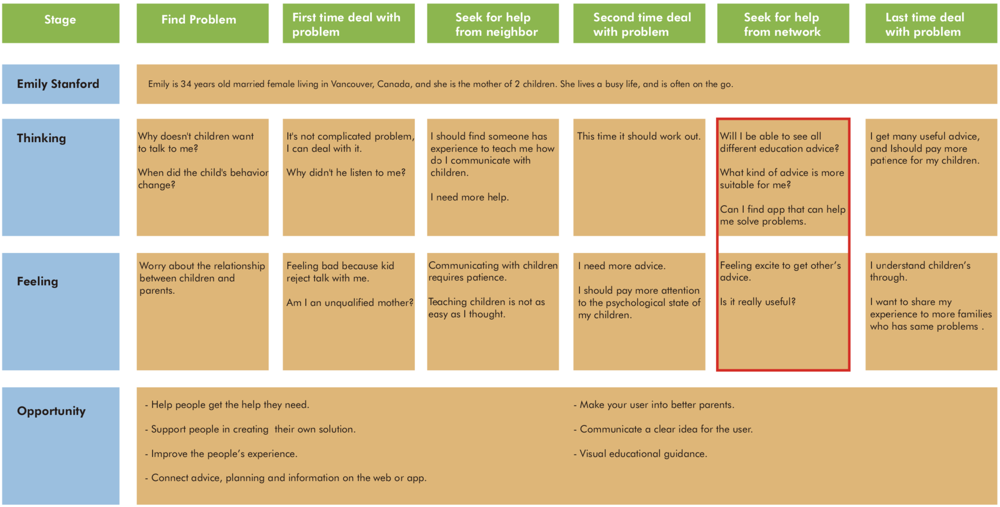
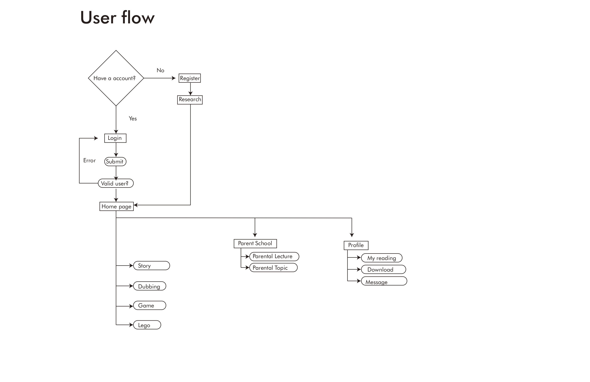

Design Brief
DIY travel is an app that makes travel plans for tourists. It can recommend tourist destinations and provide tourist strategies according to tourists' wishes.
Research
According to the research that the most stressful part of traveling to the destination was coping with weather conditions, traffic jams, and route finding.
The participants reported that the most stressful part of their trip was actually the trip planning stage, followed by traveling to the destination, and finally the actual stay at the destination.
Most people plan trips and take vacations to get away from the stress of home and work; however, very few people take travel stress into consideration. While traveling can indeed be an escape or break from the day-to-day routine, planning and taking a trip can also be quite stressful.
Ideation
Based on the above research, I create a journey map to explore how will the traverler experience with the help of the mobile app to finish their trip.
Read More
Design Brief
Happy Growth is an app that helps cultivate children's interests and hobbies, and it improve the relationship between parents and children.
Research
Generally, I know most parents attach importance to their children's education. However, More and more parents do not teach their children in the right way, which leads to cracks in the relationship between children and their parents.Interview
Firstly, I interviewed 3 families, both of them have plans to educate their children
Questions:
Both the interviews start with the questions above and also include free talk between me and the interviewees. Base on the interviews and some further exploration, I summarize some key points about education problem:
- To provide great education environment for their children.
- To help their children to develop good habits.
- To find activities that will enhance their children’s social skill.
- Hoping children grow up healthily.
- The child has a bright future.
- Hoping children can surpass their parents.
- Do not want and cannot accept the child's future is mediocre.
Ideation
Based on the above research and interview, I create a journey map to explore how will the user experience with the help of the mobile app to finish their goals.
Obviously, in this context, the key tags of WHO, HOW, and WHEN are really important for helping user to solve the problem. The best scenario will be that the user can capture these tags shortly and help them solve the problem before the relationship between parents and childrend break out.
